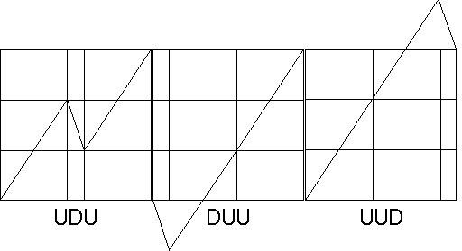
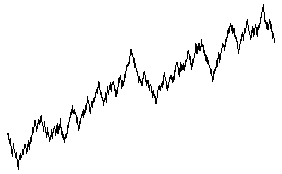

| Only a little work is needed to add enough randomness for a convincing forgery of Brownian motion. |
| We can assign directions to the three branches of the generator: |
| Up, Down, and Up (UDU). |
| There are two more possibilities, UUD and DUU. |
| If the first and third segments are of different lengths, U1 and U2, then there are six choices: |
| U1DU2, U1U2D, DU1U2, DU2U1, U2DU1, and U2U1D |
|  |
| Simply replacing each straight line segment with one of these three, selected randomly, gives a convincing surrogate of Brownian motion (with an upward drift). |
|  |
Return to Brownian Motion Cartoons